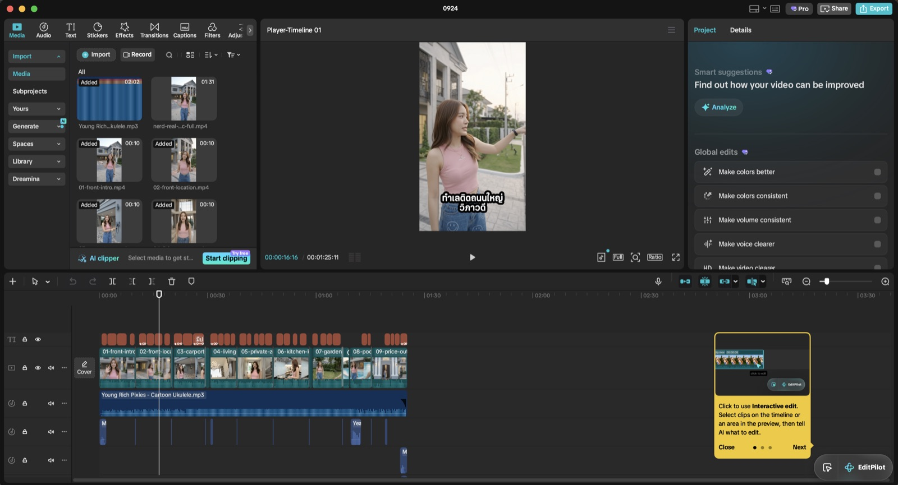
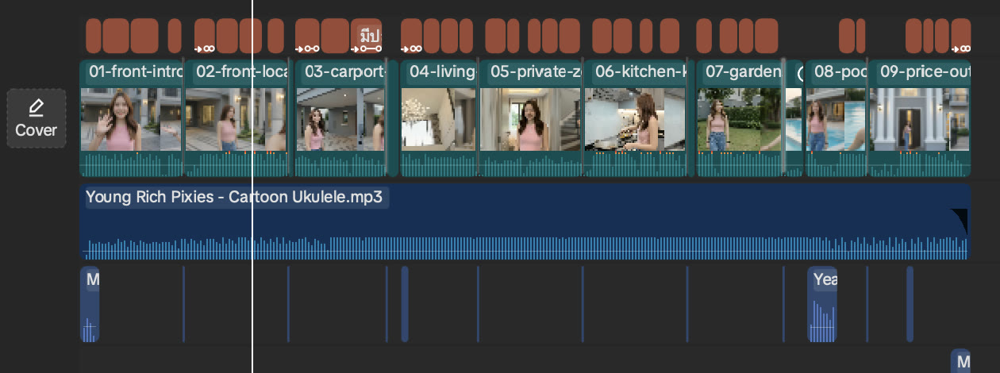
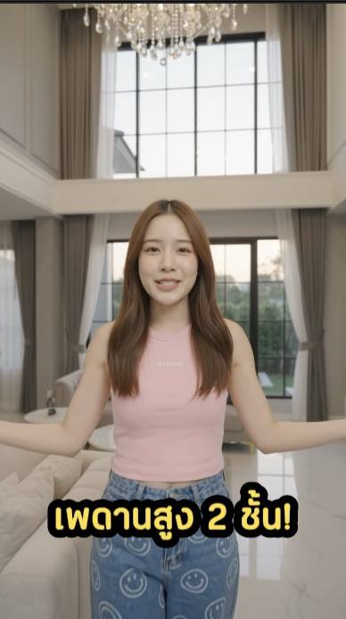
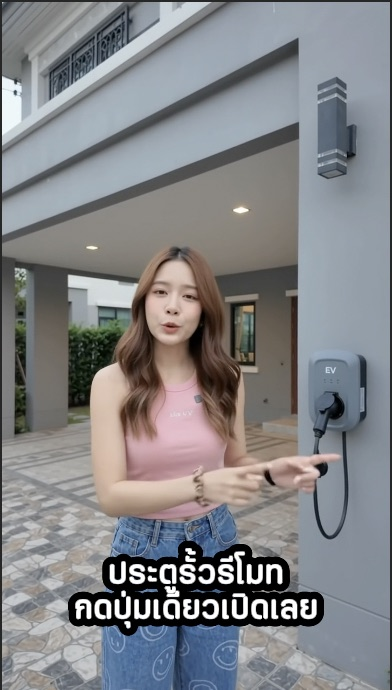
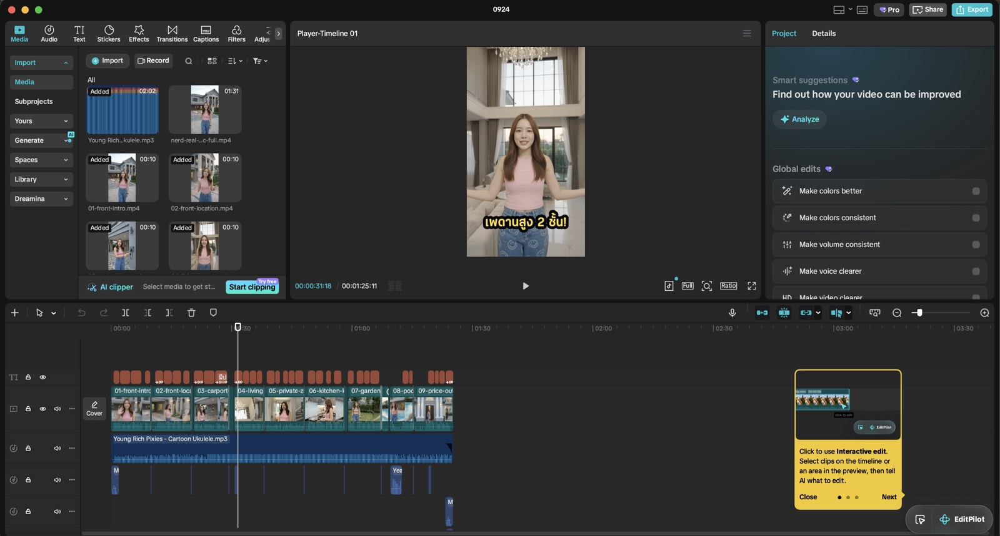
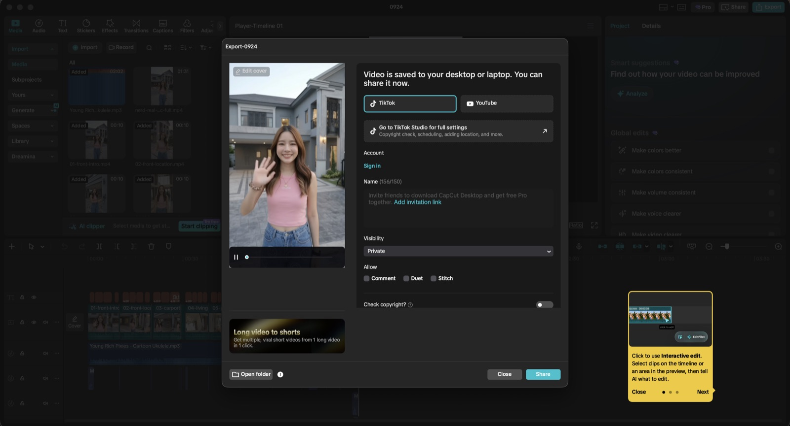

ภาพรวม 6 ขั้น
ต่อจาก คู่มือทำคลิปพูดไทยด้วย Claude × Higgsfield — ได้คลิปครบแล้ว ขั้นนี้คือตัดต่อให้พร้อมโพสต์
1วัตถุดิบ: 9 คลิปที่เจนมา
HiggsfieldGemini Omni Flash 1.1 · ช็อตละ 10 วิ · ตั้งชื่อไฟล์เรียง 01–09 ไว้ Claude Code จะได้รู้ลำดับ · ดูวิธีเจน
9 ไฟล์นี้คือทั้งหมดที่ส่งให้ Claude Code — ไม่มีซับ ไม่มีเพลง ไม่มี transition
2พิมพ์สั่งสิ่งที่อยากได้
Claude Codeคำสั่งจริงที่ใช้ — ภาษาพูดธรรมดา ไม่ต้องรู้ศัพท์ตัดต่อ
อยาก เพิ่ม subtitle เพิ่มเสียงเพลง ใส่ transition มีเสียง effect น่ารักๆ เร่งความเร็วบางช็อต
3Claude Code ตัดต่อ เติม แต่ง ให้เอง
Claude CodeCapCut Desktop · Macไม่ได้กดปุ่มใน CapCut — เขียนไฟล์โปรเจกต์ของ CapCut ด้วยสคริปต์ แล้ว CapCut เปิดขึ้นมาเป็น timeline ครบ
- CapCut เก็บโปรเจกต์เป็นไฟล์ทุกคลิป ซับ เพลง เอฟเฟกต์ บน timeline ถูกเขียนอยู่ในไฟล์โปรเจกต์ (draft) บนเครื่อง
- Claude Code เขียนไฟล์นั้นแทนเรารันสคริปต์ใน terminal ใส่คลิป 9 ตัว ซับ เพลง transition เสียงประกอบ และปรับความเร็วลงในไฟล์นั้น
- คนแค่เปิด CapCut ดูทุกอย่างอยู่บน timeline แก้ต่อเองในโปรแกรมได้ตามปกติ
- ได้คลิปสั้นลงจาก 90 เป็น 85 วิจากการเร่งความเร็วบางช่วง
สิ่งที่ถูกใส่ลงไป
| สั่งว่า | ได้อะไร |
|---|---|
| เพิ่ม subtitle | ซับไทยทุกประโยค · คำสำคัญเด้งขึ้นมาเป็นป้ายสีเหลือง เช่น "เพดานสูง 2 ชั้น!" |
| เพิ่มเสียงเพลง | เพลงบรรเลงจากคลัง CapCut (Young Rich Pixies – Cartoon Ukulele) ทั้งคลิป |
| ใส่ transition | transition ทุกรอยต่อระหว่างช็อต |
| เสียง effect น่ารักๆ | เสียงประกอบแยกแทร็ก วางตามจังหวะในคลิป |
| เร่งความเร็วบางช็อต | เร่งช่วงที่ไม่มีคนพูด · คลิปรวมเหลือ 85 วิ |


4เปิดดู ไม่ชอบตรงไหนพิมพ์บอก
Claude Codeรอบแรกไม่ผ่านเรื่องฟอนต์ — สั่งแก้เป็นภาษาไทยอีกรอบ
ตัว effect ของ subtitle ผมไม่ชอบ และ font ก็ไม่ชอบครับ เพราะเวลา font โดนอังกฤษ มันกระโดด มี font มินิมอลตัวหนา อยู่ใน CapCut ที่ภาษาอังกฤษไม่โดน ให้เปลี่ยนเป็น font พวกนั้นเลยครับ



5Export คลิปแนวตั้ง 1080×1920
CapCut1080×1920 · 30fps · แนวตั้งพร้อมลง TikTok / Reels

6เก็บเป็น skill ไว้ใช้ซ้ำ
Claude Codeทำครั้งเดียว คลิปถัดไปสั่งประโยคเดียว
skill: capcut-auto-editor
เก็บขั้นตอนทั้งหมดของคลิปนี้ไว้ในรูปแบบ skill ของ Claude Code — ครั้งหน้าพิมพ์ "แต่งคลิปใน capcut ให้หน่อย" หรือ "ทำแบบคลิป 0924" ก็ได้ครบชุด
เลือกสไตล์ได้ 5 แบบ
น่ารัก · เท่ · เวอร์ · เทคโนโลยี · แอ็กชัน — สลับชุดซับ เพลง transition เสียงประกอบให้เข้ากับสไตล์ที่เลือก
คำถามที่พบบ่อย: AI ตัดต่อวิดีโอ
AI ตัดต่อวิดีโอใน CapCut ให้ได้ไหม
ได้ — Claude Code เขียนไฟล์โปรเจกต์ของ CapCut Desktop บน Mac ผ่านสคริปต์ใน terminal ใส่คลิป ซับไทย เพลง transition เสียงประกอบ และปรับความเร็วให้ พอเปิด CapCut ทุกอย่างอยู่บน timeline แก้ต่อเองได้ตามปกติ คลิปตัวอย่างในหน้านี้ตัดต่อแบบนี้ทั้งคลิป
Claude Code คืออะไร
Claude Code คือ AI ของ Anthropic ที่ทำงานใน terminal อ่าน เขียน และรันไฟล์ในเครื่องได้เอง เดิมทำมาเพื่อเขียนโค้ด แต่สั่งงานอื่นที่ทำผ่านไฟล์ได้ด้วย เช่น ตัดต่อวิดีโอผ่านไฟล์โปรเจกต์ของ CapCut
ซับ CapCut ฟอนต์ไทยกระโดดเวลามีภาษาอังกฤษ แก้ยังไง
เกิดจากฟอนต์ไทยบางตัวไม่มีตัวอังกฤษและตัวเลขในตัว โปรแกรมเลยดึงฟอนต์อื่นมาแทน ขนาดและเส้นฐานไม่เท่ากัน ตัวหนังสือจึงดูกระโดด วิธีแก้คือเปลี่ยนเป็นฟอนต์ที่มีทั้งไทยและอังกฤษในตัวเดียว เช่น ฟอนต์ตัวหนาแบบมินิมอลในคลัง CapCut
ให้ AI ตัดต่อวิดีโอเสียค่าใช้จ่ายเท่าไหร่
ขั้นตัดต่อไม่ใช้เครดิต Higgsfield เลย ต้นทุนหลักอยู่ที่ตอนเจนคลิป คลิปตัวอย่าง 85 วินาทีจ่ายรวม 520 credits (ประมาณ 671 บาท) — เจน 9 ช็อตรวมยิงแก้ 7 ครั้ง 480 + โคลนเสียงสำรอง 40 ยังไม่รวมค่าสมาชิก Claude
ต้นทุนทั้งคลิป: เจน + ตัดต่อ
ตัวเลขจากประวัติเครดิตใน Higgsfield
| ขั้น | รายละเอียด | credits · บาท |
|---|---|---|
| เจนคลิป | 9 ช็อต + ยิงแก้ 7 ครั้ง (Omni Flash 1.1 · 30/ช็อต) | 480 |
| โคลนเสียงสำรอง | เสียง "Jija" เผื่อเสียงช็อตไหนเพี้ยน — สุดท้ายไม่ได้ใช้ เสียงเหมือนกันทั้ง 9 ช็อต | 40 |
| ตัดต่อ | Claude Code × CapCut | 0 |
| รวมที่จ่ายจริง | 520 |
ราคาบาทคิดจากแพ็กเกจ Higgsfield $39 = 1.29 บาท/เครดิต · ไม่รวมค่า Claude และ CapCut